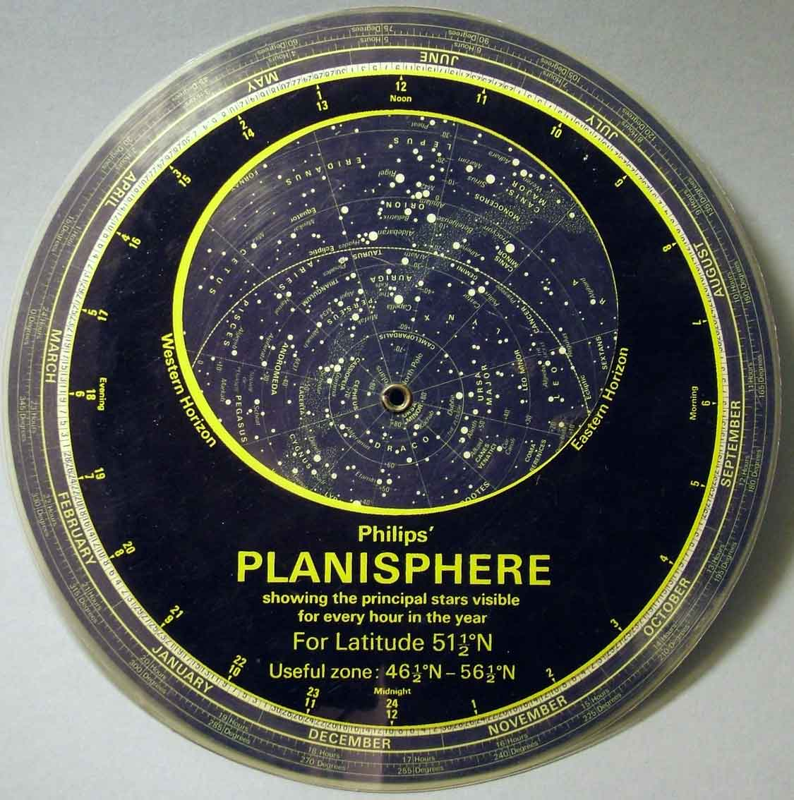
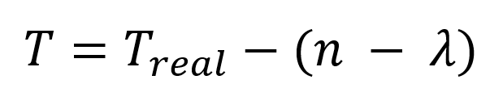
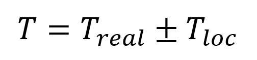

To set up the map we need some information.
Fill in the fields or use automatic setup

A planisphere is a movable star map that allows you to get a view of the starry sky at a certain time. The planisphere consists of two parts - the star map itself and a special circle, placed on top of this map. To set up the map correctly, you need to know your geographic coordinates, because the view of the starry sky varies at different points on the globe.
The circle defines which part of the sky is visible from your latitude. In the Northern Hemisphere, depending on how close to the equator you are, you can see more of the southern sky, and this special circle allows you to see them on the map. That is why we need your latitude.
The remaining values are needed to match your time as closely as possible to the time shown on the map. The planisphere itself displays the view of the starry sky as it is on the prime meridian. This time may not coincide with your time. Therefore, there is a special formula for adjusting the map:

where Treal is real time, n is time zone in UTC format, 𝝀 is the time it takes the Earth to rotate by the number of degrees of longitude.
This formula allows us to obtain the result in the form below:

This shows how many minutes we need to add or subtract from your real time to get the correct view of the starry sky for your longitude.
You can leave the last three fields at their default values, but in that case you will need to adjust the map manually to match your local time.
Your latitude:
degrees
Your longitude:
degrees
Your time zone for daylight saving time in UTC format:
Your time zone for winter time in UTC format: